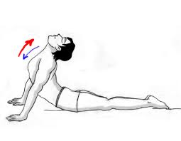

आसन > भुजंगासन :

-
भुजंगासन, जिसे "Cobra Pose" भी कहा जाता है, रीढ़ की हड्डी को मजबूत करने और पाचन तंत्र को सक्रिय
करने के लिए एक महत्वपूर्ण योगासन है।
भुजंगासन करने की विधि :
- आरंभिक स्थिति: पेट के बल लेट जाएं और हाथों को कंधे के नीचे रखें।
- सांस लेना: धीरे-धीरे सांस लेते हुए अपने ऊपरी शरीर को ऊपर की ओर उठाएं, कोहनियों को मोड़े
बिना।
- ध्यान केंद्रित करना: कुछ समय इस स्थिति में रहें और श्वास सामान्य रखें।
- सांस छोड़ना: धीरे-धीरे सांस छोड़ते हुए वापस सामान्य स्थिति में आएं।
लाभ :
- भुजंगासन रीढ़ की हड्डी को मजबूत और लचीला बनाता है।
- यह पाचन तंत्र को सक्रिय करता है और तनाव को कम करता है।
Move to top